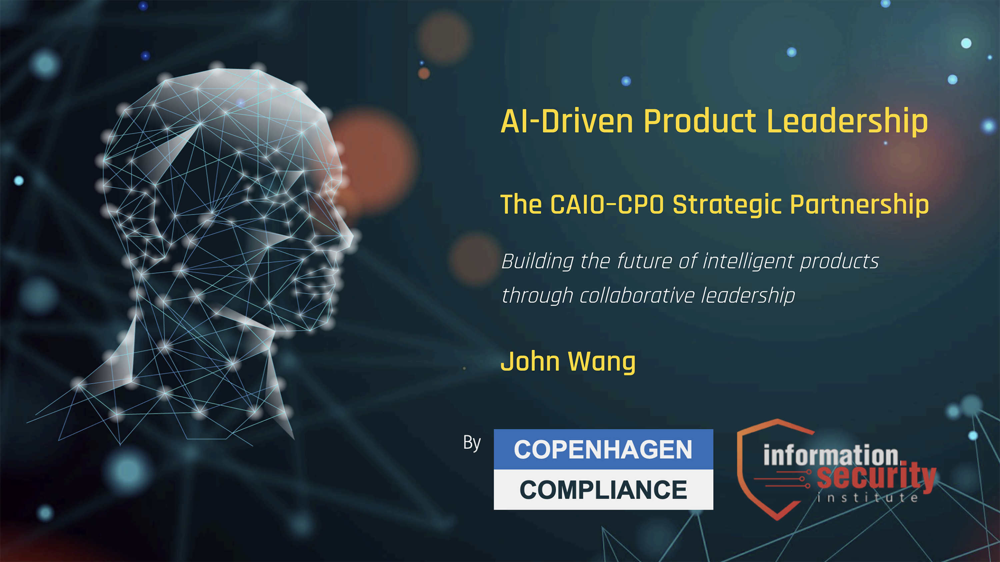
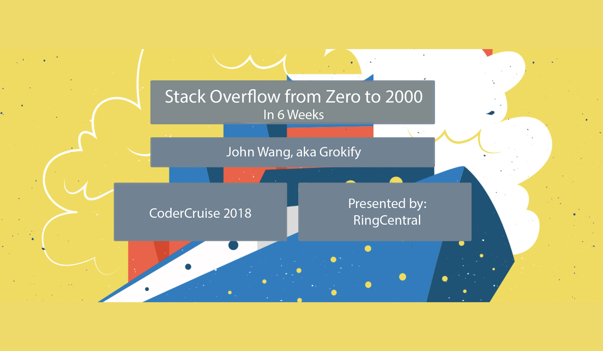

John's Presentations
AI-Driven Product Leadership: The CAIO-CPO Partnership - CAIO Certification Masterclass 2025

Stack Overflow from 0 to 2000 in 6 Weeks - Coder Cruise 2018
Link: Stack Overflow from 0 to 2000 in 6 Weeks

Integrate RingCentral Voice/Text Features into Lightning - Dreamforce 2017
Link: Integrate RingCentral Voice/Text Features into Lightning